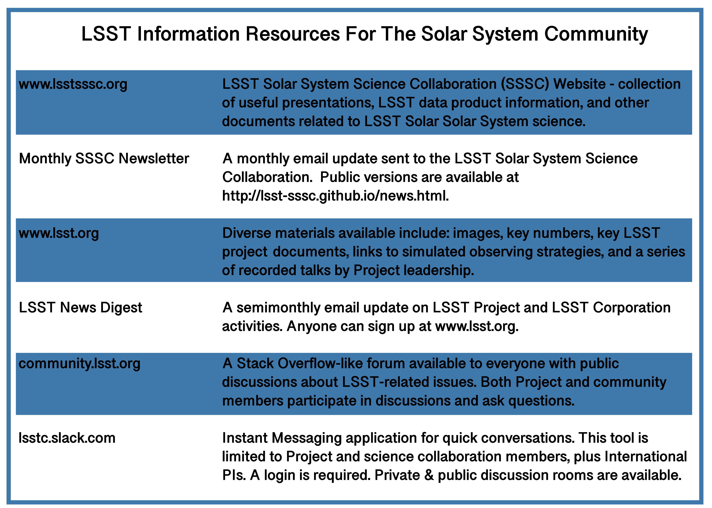

SSSC Membership and How to Join the SSSC

Photo from the 2018 LSST Solar System Readiness Sprint at the University of Washington, Seattle
The LSST Solar System Science Collaboration (SSSC) accepts applications from astronomers and planetary scientists who have data access rights to LSST data (example 1: a scientist based in countries with LSST data rights (US or Chile); example 2: a scientist who is part of an institution or organization that has data access for their members (like LSST: UK)).
Applications to become members of the LSST SSSC can be filled out on the membership application form. Applying to become a member is a short process, and the chairs of the SSSC will get back to you promptly. Our current guidelines on membership are focused on building community involvement. Researchers, at any career level, who can identify areas of interest they wish to pursue that are relevant to LSST Solar System science and are LSST data rights holders will be granted membership. All SSSC members have voting rights and access to future collaboration-generated proprietary data products and tools. Additionally, all SSSC members are expected to abide by the SSSC Code of Conduct, the SSSC Publication Policy, and the SSSC Charter.
If you have any questions or concerns about the application process please contact Meg Schwamb and David Trilling (LSST SSSC co-chairs).
If you are working on a Rubin Observatory international in-kind contribution proposal, please contact Meg Schwamb and David Trilling (LSST SSSC co-chairs) to discuss potential observer status within the SSSC while you are developing your proposal.
Information Resources For SSSC Members and Non-Members
Public List of SSSC Members:
- Agata Rożek
- Alan Jackson
- Allan Jackson
- Anatoliy Ivantsov
- Antonio Vanzanella
- Apostolos Christou
- Aren Heinze
- Audrey Thirouin
- Bryan Holler
- Bryce T. Bolin
- Colin Orion Chandler
- Colin Snodgrass
- Cyrielle Opitom
- Daniel HESTROFFER
- Darin Ragozzine
- Darryl Seligman
- Dave Monet
- Dave Young
- David Gerdes
- David Trilling
- Davide Farnocchia
- Deborah Woods
- Dennis Bodewits
- Edward Lin
- Eric Christensen
- Gal Sarid
- Gongjie Li
- Grigori Fedorets
- Gustavo Benedetti Rossi
- Hal Levison
- Henry Hsieh
- James Robinson
- Javier Licandro
- Jean-Marc Petit
- Josef Durech
- Julien Peloton
- Julio Ignacio Bueno de Camargo
- Kat Volk
- Laura Inno
- Lynne Jones
- Maitrayee Bose
- Malena Rice
- Mario Juric
- Martin Banda
- Martin Elvis
- Masao Sako
- Matija Cuk
- Matt Payne
- Matthew J. Holman
- Meg Schwamb
- Melissa Brucker
- Michael Marsset
- Michael S. P. Kelley
- Michele Bannister
- Miguel de Val-Borro
- Mikael Granvik
- Milagros Colazo
- Nalin Samarasinha
- Nicholas Moskovitz
- Padma A. Yanamandra-Fisher
- Peter Veres
- Renu Malhotra
- Robert Jedicke
- Rodrigo Carlos Boufleur
- Rosemary Dorsey
- Sarah Greenstreet
- Scott Sheppard
- Stephen Ridgway
- Steve Chesley
- Susan Benecchi
- Tansu Daylan
- Tom Seccull
- Wesley Fraser
- Will Oldroyd
- Youssef Moulane
If you are already a member and you don't appear in the above list, please contact the SSSC co-chairs.